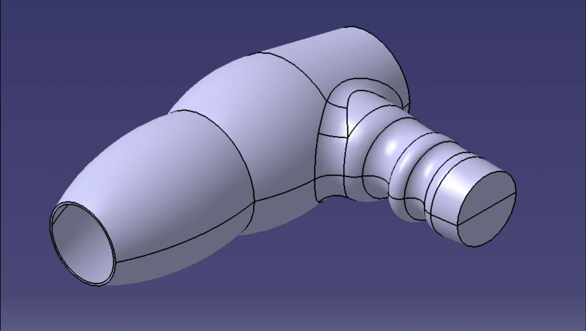

Part Design
Create solid parts from sketches using pads, pockets, holes, shafts, fillets, and other features.
Project 03 / ENGR 305 — Advanced CATIA
Embry-Riddle Aeronautical University / CAD/CAM Minor
Through ENGR 305 and my CAD/CAM minor, I expanded beyond basic CATIA Part Design and learned how different CATIA workbenches and modeling strategies can be used to create more complex geometry and assemblies. My coursework has included Part Design, Generative Shape Design, parameters, Boolean operations, axis systems, and kinematics.
Create solid parts from sketches using pads, pockets, holes, shafts, fillets, and other features.
Create and control complex wireframe and surface geometry, especially shapes that are difficult to build with solid features alone.
Control dimensions and relationships so models can be modified more efficiently.
Combine, remove, or intersect solid bodies to create more complex geometry.
Set local coordinate systems and references for modeling and positioning.
Define and study the movement of mechanisms and assemblies.

As part of my CAD/CAM minor, I’m currently taking ENGR 305, an advanced CATIA course. I’m developing stronger skills in complex geometry, part design, surfaces, and assemblies.
My goal is to create accurate models from real objects and engineering geometry while learning more advanced CATIA workflows.
I use Part Design and Generative Shape Design to translate real product geometry into CAD. I work with parameters, Boolean operations, and axis systems to control features and references, and study kinematics for mechanism movement. This has helped me improve modeling strategy and feature organization.
The course is allowing me to build more complex CAD models and improve my understanding of surface modeling, solid modeling, and mechanism movement. It is strengthening how I approach real-world geometry and developing a CAD portfolio relevant to design and manufacturing roles.
These models required Generative Shape Design techniques to create and control more complex curved surfaces and product geometry.
Mechanical components and product geometry grouped by solid-modeling work.